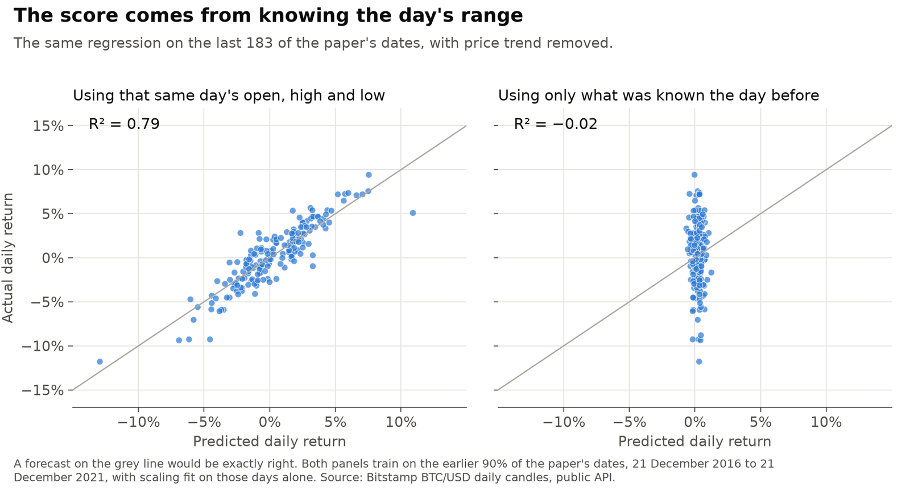
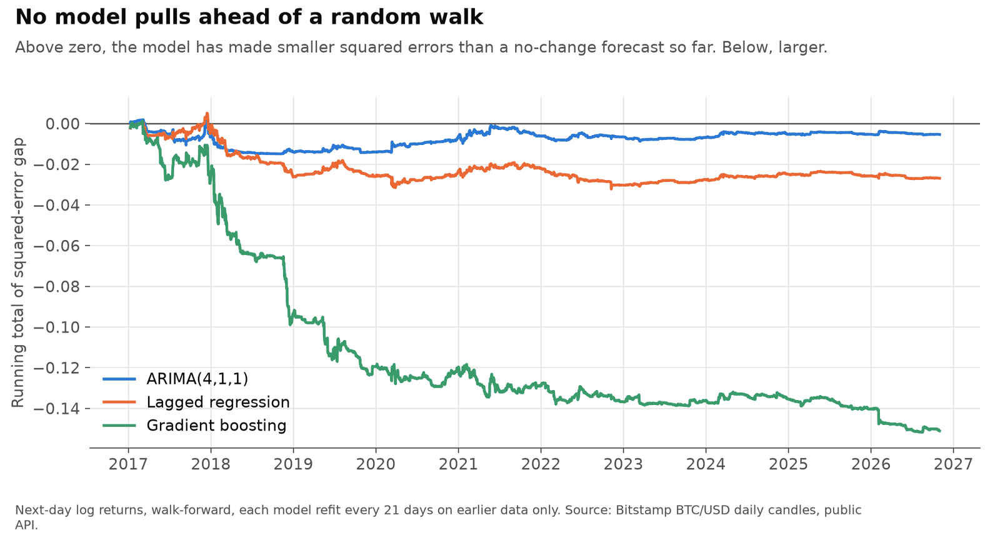
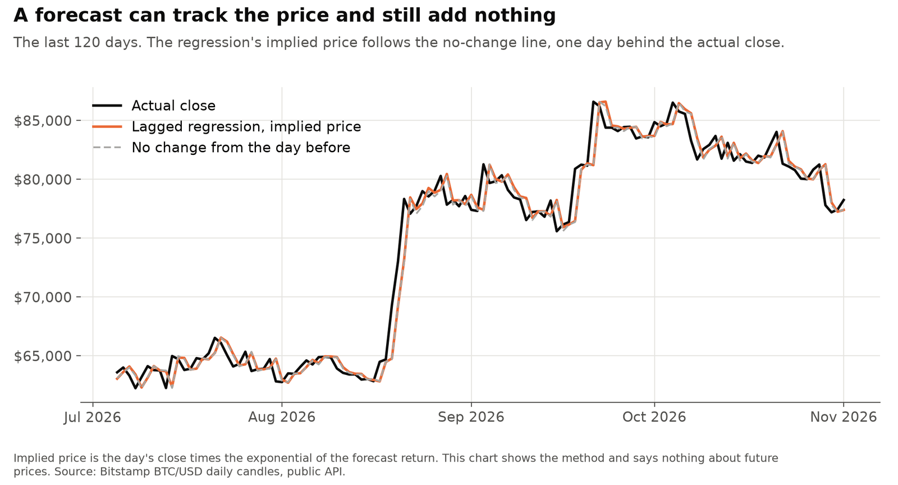
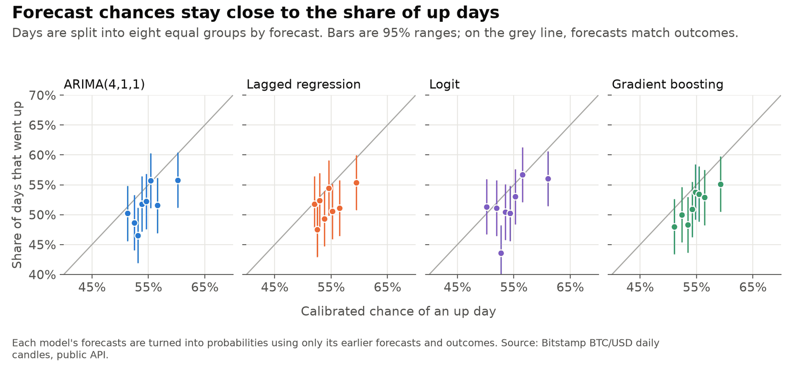

Checking my Bitcoin forecasts
In an unpublished 2022 study I compared ways to forecast Bitcoin's daily price and concluded that a linear regression worked best, with a score of 0.9994. I rebuilt it in 2026 to see whether that held up. It didn't, and the reasons are useful for anyone evaluating a forecast. Results are as of 2 November 2026.
Personal project: my own analysis of publicly available data. It is not associated with my work for any current or past employer and does not represent their views. This is a lesson in method. It isn't trading or investment advice.
At a glance
| Question | Methods | Answer |
|---|---|---|
| Where did 0.9994 come from? | Same regression, with one problem fixed at a time | Look-ahead. R² on daily returns falls from 0.79 to −0.02 once the day's own prices are removed. |
| Could the 2022 study rank its models by MSE? | One forecast measured on each scale | No. The numbers were on three different scales. |
| Does anything beat a random walk? | Walk-forward, Diebold-Mariano, Clark-West | No. ARIMA and the regression can't be told apart from it, and gradient boosting is worse. |
| Can direction be forecast? | Logit, walk-forward calibration, Brier scores | Barely. Accuracy of about 51.7% against 51.6% for always saying up. |
1. Where did 0.9994 come from?
The regression predicted each day's close from that day's open, high, low and volume. The high and low aren't known until the day is over, so this can't be used as a forecast. I don't have the original estimation code, so I rebuilt the setup from the study's description and its data file, which gives 0.9995 against the 0.9994 reported.

| Inputs | Target | Validation | R², 2022 file | R², Bitstamp |
|---|---|---|---|---|
| Same day | Price, scaled | Random 10%, mean of 200 draws | 0.9995 | 0.9994 |
| Same day | Price | Last 10%, scaled on the past | 0.9947 | 0.9943 |
| Day before | Price | Last 10%, scaled on the past | 0.9705 | 0.9698 |
| No-change forecast | Price | Last 10% | 0.9713 | 0.9703 |
| Same day | Log return | Last 10%, scaled on the past | 0.7974 | 0.7914 |
| Day before | Log return | Last 10%, scaled on the past | −0.0148 | −0.0197 |
| No-change forecast | Log return | Last 10% | −0.0047 | −0.0046 |
2. Why fixing that wasn't enough
Even without the leak, a regression on price levels scores 0.97, and repeating yesterday's price scores the same. Prices are close to their value the day before, so R² on levels says little.
The 2022 study also ranked its models by MSE on three different scales: scaled prices, log returns and, for the logit, a log loss. Those numbers can't be compared. On its own scale, its ARIMA was slightly worse than a forecast of no change.
3. The rebuild
Every model now forecasts the next day's log return, using only what was known at the previous close, and is refit on earlier days only. I compared ARIMA, a lagged regression and gradient boosting with a random walk.
| Model | Out-of-sample R² against a random walk | Diebold-Mariano p |
|---|---|---|
| ARIMA(4,1,1) | −0.12% | 0.73 |
| Lagged regression | −0.58% | 0.13 |
| Gradient boosting | −3.27% | 0.001 |

ARIMA and the regression can't be told apart from a random walk, and gradient boosting is measurably worse. A no-change forecast still gets an R² of 0.9985 on price levels, close to the 2022 number.

4. Can direction be forecast?
The 2022 logit had AUCs of 0.54 and 0.51, close to a coin flip, and that was its most reliable result. In the rebuild, after calibrating each model's forecasts on its own past, accuracy is about 51.7% against 51.6% for always saying up. The difference isn't significant.

What this does and doesn't show
- The results don't prove that returns can't be forecast: with this many days, a true out-of-sample R² under about 0.7% couldn't be told from zero.
- They come from one exchange, a daily horizon and a small set of inputs. No costs are modelled because no trading is modelled.
- The repository's tests fail if any input or forecast changes when later prices change.
Data
Daily BTC/USD candles from Bitstamp's public API, which aren't redistributed. The "2022 file" column comes from my own copy of the Yahoo file the 2022 study used, which isn't redistributed either. The 2022 study isn't in the repository, and its numbers are quoted there and here.